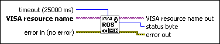

Wait for RQS VI
Owning Palette: Event Handling VIs and Functions
Requires: Base Development System
Waits for a service request from a device. Before you call this VI, first enable the event by calling the VISA Enable Event function and specifying Service Request as the event type.
If the event arrives within the specified timeout period, the status byte of the device is read and returned.

 Add to the block diagram Add to the block diagram |
 Find on the palette Find on the palette |